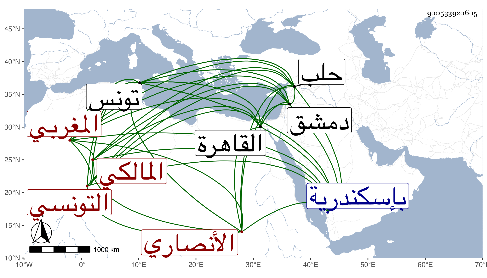

0902Sakhawi.DawLamic.ITO20230111-ara1.EIS1600.900533920605
Biography ID: 900533920605
41
محمد بن محمد بن محمد أبو البركات بن الأمين بن عزوز بزايين معجمتين ورأيته مجودا بنون آخره بخط غير واحد كالجمال البدراني الأنصاري التونسي المغربي المالكي ويعرف بابن عزوز . اعتنى بالرواية وأخذ عن الكمال بن خير والشهب المتبولي والكلوتاتي والواسطي والحفاظ البرهان الحلبي وابن ناصر الدين والولي العراقي وشيخنا ولازمهما في كتابة الأمالي واختص بشيخنا كثيرا وابن الجزري وعائشة ابنة ابن الشرائحي والنور الفوى والشمس الشامي بإسكندرية ودمشق وحلب والقاهرة وغيرها ومما أخذه عن ابن خير البلدانيات الأربعين للوادياشي بإجازته منه وعن الواسطي المسلسل وجزء ابن عرفة والبطاقة وعن ابنة الشرائحي مشيخة الفخر وعن ابن الجزري فيها وفي مسند أحمد وعن الفوى من لفظ الكلوتاتي قطعة كبيرة من آخر سنن الدارقطني مع اليسير من أولها وأثنائها ، ووصفه الجمال البدراني في الطبقة بالفقيه المشتغل المحصل الفاضل ، وقرأ معظمها على الشمس الشامي بل قرأ عليه سيرة ابن هشام ومشيخة الفخر ومسند أبي بكر من مسند أحمد ، وحصل وتميز ورافق الزين رضوان المستملي وغيره من المحدثين ورجع إلى بلاده فصار أشهر من بتونس في الرواية وأمسهم بالصنعة في الجملة وتصدى للأسماع فأخذ عنه جماعة إلى أن مات مطعونا فيها سنة ثلاث وسبعين وأظنه جاز السبعين وسد به الباب هناك وجيء بكتبه بعد مدة فبيعت وكان أمين الأمناء بتونس بمعنى أن التجار ونحوهم يتحاكمون إليه في العرفيات فيقضي بينهم ولو بالحبس والضرب رحمه الله وإيانا .
